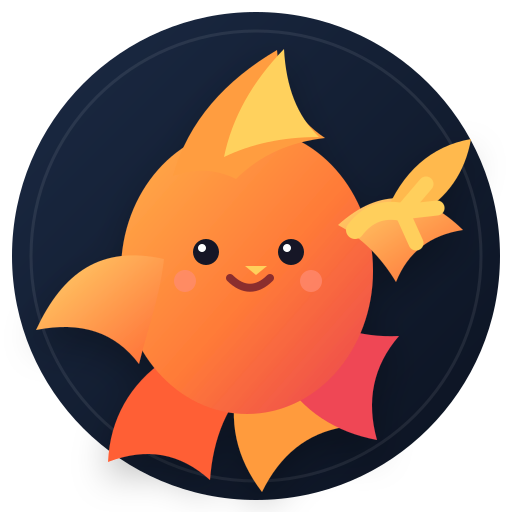

112,5 kg
RENPHO validéObjectif : 80 kg

PROJECTPHOENIXJOUR 1 / 365Project Phoenix suit la transformation de Julien à partir des données qu’il choisit de publier. Le 29 juillet 2026 devient le Jour 1 officiel : pesée RENPHO, composition corporelle, tour de taille, sommeil et activité complète.
Départ officiel : 29/07/2026 · Dernière synchronisation : 29/07/2026 à 20:55 · Les données du 28/07 sont exclues.
Les dernières valeurs du 29 juillet sont retenues comme référence officielle du projet.
Le fichier du 29 juillet contient la journée complète et permet d’isoler la principale fenêtre d’activité du soir.
L’activité s’est fortement concentrée entre la fin d’après-midi et le début de soirée.
Le sommeil enregistré le 29 juillet est inclus dans le Jour 1 officiel.
La durée est bonne. La suite du projet permettra surtout de comparer les tendances plutôt qu’une valeur isolée.
La ligne pointillée est un cap visuel. Le seul point réel disponible est la mesure officielle du Jour 1.
Le fichier reçu contient le tour de taille. Les autres circonférences ne sont pas présentes dans cet export.
La pesée RENPHO, la composition corporelle, le tour de taille et l’activité de la journée forment désormais la référence officielle du projet.
Seules les statistiques sélectionnées par Julien sont publiées. Le fichier Apple Santé complet n’est pas exposé sur le site.